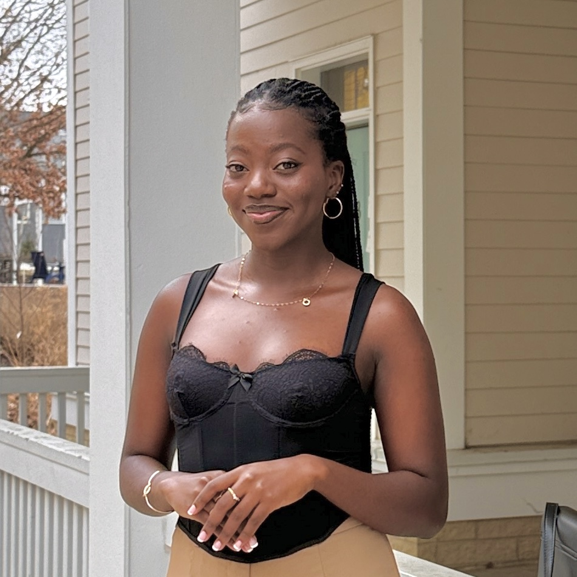

About Us
Yeseo Jeon (She/Her)
I am a computer science major on the pre-veterinary track with special interests in animal behavior research. I am interested in applying object tracking skills to animal behavior research, and I hope to use this project as an opportunity to learn more about object tracking and its applications in animal behavior studies.
Josh Sampson (any pronouns)
I am a biology and computer science major interested in applying computer programming and computer science principles to biological research. I hope to apply what I have learned about object trackers during this project to researching copepods and three-spined stickleback, species I have previously studied.

Lucky Beulla Muhoza (She/Her)
I am majoring in Computer Science with a minor in Mathematics. I am passionate about security-related fields, including Information Security, Cybersecurity, and Security Engineering, as well as machine learning applications in autonomous vehicles. Through this project, I enjoyed implementing an object tracker to better understand how pedestrians are detected and tracked in autonomous driving systems.
Theo Demetriades (He/Him)
I am a computer science and physics double major with a minor in mathematics. I am interested in information theory, machine learning, and quantum computing.

Sara Wang (She/They)
I am double majoring in Computer Science and Gender Studies, and I am passionate about data science and machine learning — particularly how these technologies shape and are shaped by the social world. For this project, I really enjoyed diving into the technical side of multi-object tracking, especially seeing how algorithms like the Kalman Filter and Hungarian Algorithm work together to follow multiple pedestrians across frames in real time.
Lucy Zhang (She/Her)
I am double majoring in Computer Science and Math. I am interested in software engineering, computer graphics, and algorithms. This project was an exciting opportunity for me to explore computer vision.
Acknowledgements
We would like to thank Chelsey Edge, our Comps advisor, for her guidance and support throughout this project. Her feedback and encouragement were instrumental in helping us develop and present our work.
We also thank Mike Tie, Technical Director in Computer Science, for his technical support and assistance during the implementation process.
Background Information
Object tracking is a computer vision application where a program detects and follows an object’s movement in space across time. Object tracking is a useful application that can be used in many fields, including but not limited to animal behavior studies, sports analytics, autonomous vehicles, [2] etc.
In order to do this, the system requires a detector that determines what objects are present in each image. It also requires a motion modeler that makes predictions on where the object is expected to appear in the frame based on its previous position and motion, and also updates that prediction from information from detections. Mathematical models like the Kalman Filter make this possible. In cases of multiple object tracking (MOT), the tracker needs to compare predicted object locations with new detections and assign the most similar locations optimally. Methods like the Hungarian algorithm solve this assignment problem.
Our aim was to develop trackers to track pedestrians (for human behavior) or fruit flies (for animal behavior) as subjects. Some subgroups aimed to design these trackers for multi-object tracking. To achieve this goal, we aimed to implement three different tracking algorithms: SORT, Bytetrack, and OC-SORT.
HOG and YOLO Detectors
The first step of object tracking is object detection, since we need to know where an object is to begin with if we hope to track its motion. The two detectors we used are HOG and YOLO-based.
HOG stands for Histogram of Oriented Gradients, and is a feature extractor, meaning its input is an image and its output is a feature vector (which is then given to some other machine learning model to do the actual detection). The vectors themselves are summaries (histograms) of the gradient magnitudes and directions throughout the regions of the image. The gradient is just the change in pixel value, so gradient magnitude can tell us something about edge sharpness and direction can tell us about edge (object) shape [1].
HOG features are then passed to a machine learning model, often a Support Vector Machine (SVM), to do the actual classification/detection, though this is outside the scope of our project. While HOG is nice because we can easily understand how it works, it is unfortunately not fast or accurate enough to be considered state-of-the-art. Instead, neural network-based detectors such as YOLO are the modern standard. YOLO stands for “You Only Look Once”, and uses specialized neural networks to efficiently classify images using a single pass. Although neural networks give desirable performance, a drawback is that it is more difficult to interpret how they function than, for example, HOG.
Kalman filter (Motion model)
When modeling the motion of the tracked object, we want our model to be robust to both noise (random variation in the measurement/process) as well as nonrandom changes to the motion of the tracked object. The Kalman filter is an algorithm that allows us to achieve this. Each subgroup used modifications of the same base kalman filter implementation, developed by our group.
The Kalman filter combines imperfect measurements with a motion model to produce a more stable and accurate estimate of an object's true position over time. The filter tracks the state vector, which defines the quantities being tracked. In our system, the state vector includes the parameters of the object’s bounding box along with the velocities of the parameters.
The Kalman filter operates iteratively through two steps:
- Estimation: the state vector and its uncertainty are projected forward using the motion model.
- Update: A new detection is incorporated using the Kalman gain, which determines how much the measurement should adjust the prediction based on the uncertainties P and R.
IoU
Intersection over Union (IoU) is a geometric similarity metric that quantifies the spatial overlap between two bounding boxes. It serves as the foundation for determining correspondence between predicted track positions and newly detected objects.
Interpretation:
IoU values range from 0 to 1:
IoU = 1.0: Perfect alignment (boxes coincide exactly)
IoU ≥ 0.7: Strong match (substantial overlap)
IoU ≈ 0.3-0.5: Moderate match (partial overlap)
IoU < 0.3: Poor match (minimal or no overlap)
IoU = 0: No overlap (distinct objects)
Hungarian algorithm
After computing IoU values between all detection-track pairs, we face the assignment problem: given N detections and M tracks, determine the optimal one-to-one correspondence. This is a combinatorial optimization problem with exponentially many solutions. Even with just 5 detections and 5 tracks, 120 possible assignments exist. The challenge is identifying the globally optimal solution.
We formulate data association as a minimum cost assignment problem solved by the Hungarian Algorithm. IoU similarity scores are converted to costs using: Cost(i,j) = 1 - IoU(detection_i, track_j). This ensures high overlap yields low cost (preferred matches) while low overlap yields high cost (avoided matches). For example, IoU = 0.90 becomes cost = 0.10 (attractive match), while IoU = 0.20 becomes cost = 0.80 (poor match). Consider a cost matrix where Detection 1 has costs of 0.15, 0.90, and 0.95 with Tracks 5, 8, and 12 respectively. The minimal cost of 0.15 indicates Track 5 is the best match. Similarly, Detection 2's costs of 0.92, 0.12, and 0.88 clearly favor Track 8, while Detection 3's costs of 0.95, 0.91, and 0.18 point to Track 12. The Hungarian Algorithm uses this structure to find the optimal global assignment.
The Hungarian Algorithm minimizes the sum of costs across all matched pairs, subject to constraints ensuring each detection matches at most one track and vice versa. This guarantees the globally optimal assignment rather than a locally greedy solution that might produce suboptimal overall results.
References
[1] S. Mallick, “Histogram of Oriented Gradients Explained Using OpenCV,” LearnOpenCV, Dec. 06, 2016. https://learnopencv.com/histogram-of-oriented-gradients/
[2] Wenhan Luo, Junliang Xing, Anton Milan, Xiaoqin Zhang, Wei Liu, Tae-Kyun Kim, Multiple object tracking: A literature review, Artificial Intelligence, Volume 293, 2021, 103448, ISSN 0004-3702, https://doi.org/10.1016/j.artint.2020.103448. (https://www.sciencedirect.com/science/article/pii/S0004370220301958)